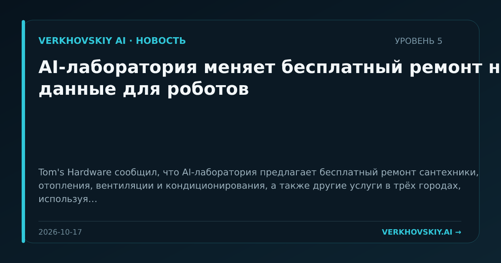

AI-лаборатория меняет бесплатный ремонт на данные для роботов
Tom's Hardware сообщил, что AI-лаборатория предлагает бесплатный ремонт сантехники, отопления, вентиляции и кондиционирования, а также другие услуги в трёх городах, используя носимые датчики для записи видео работ ради обучения роботов. Почему это важно: Сервисный труд превращается в источник данных для embodied AI. Это создаёт новую форму обмена: бесплатная услуга против права наблюдать и извлекать профессиональные движения.